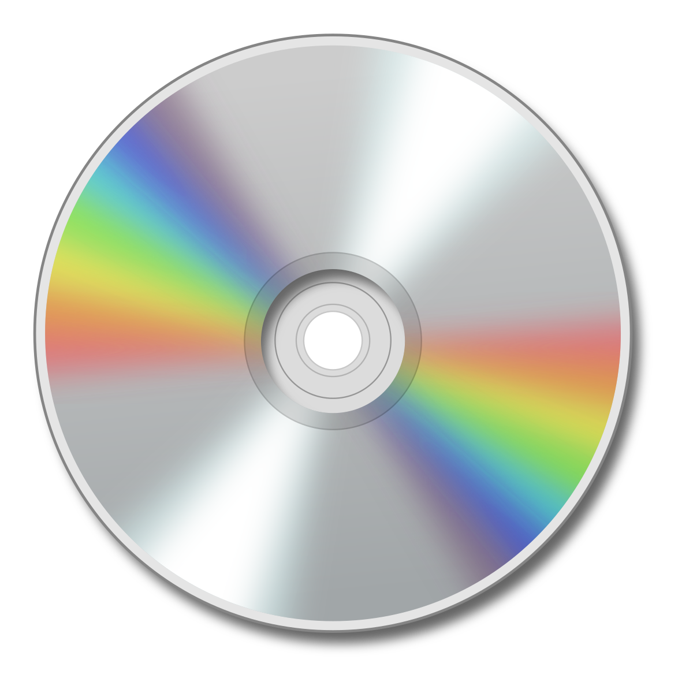
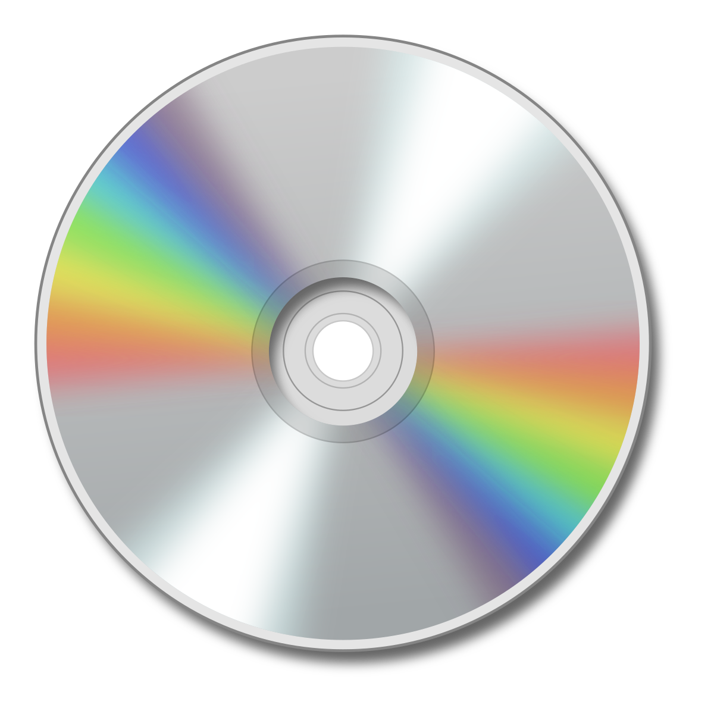
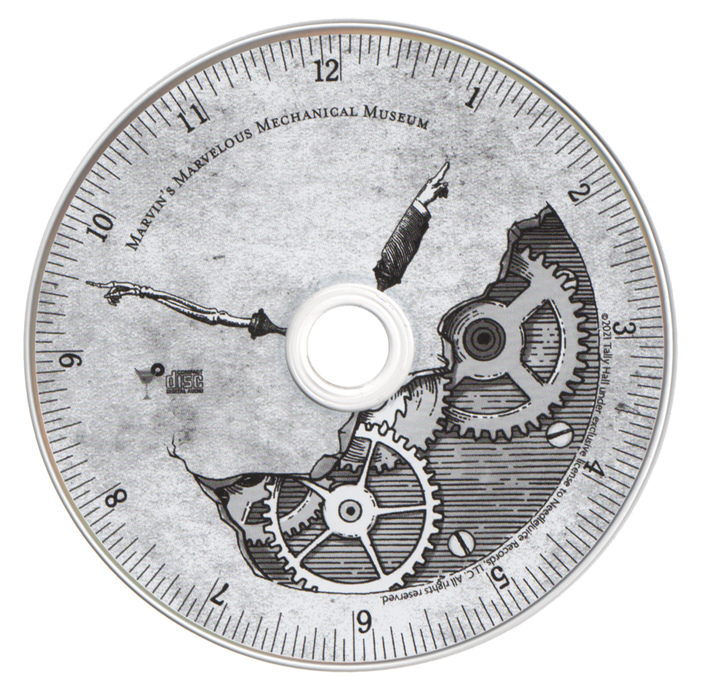
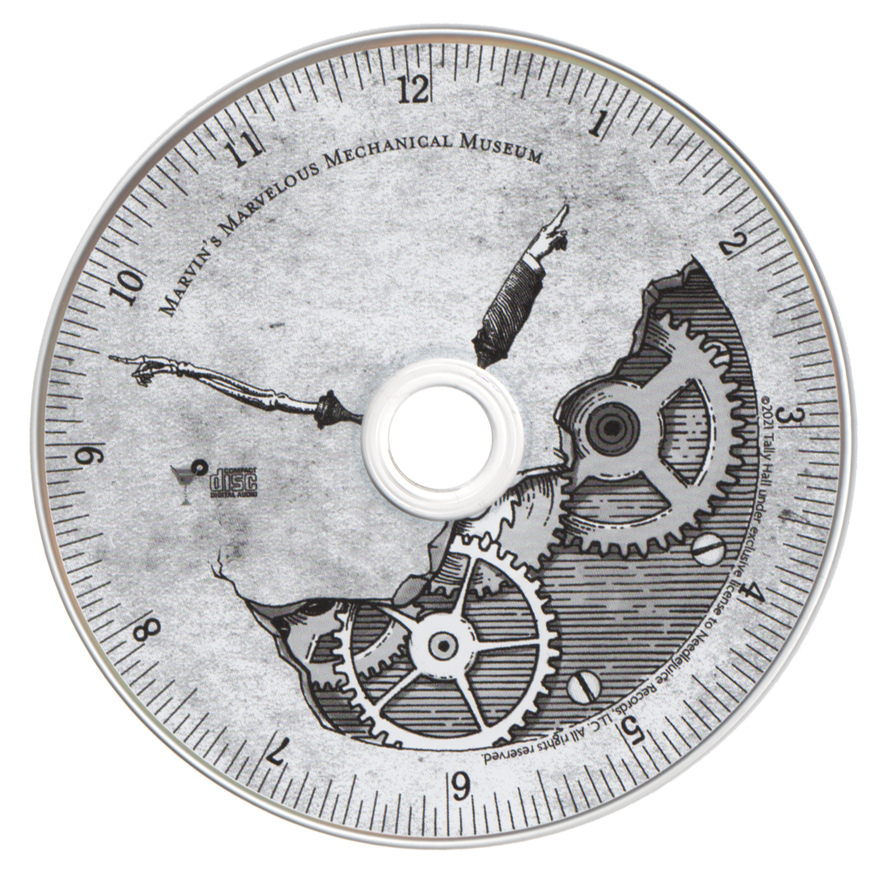
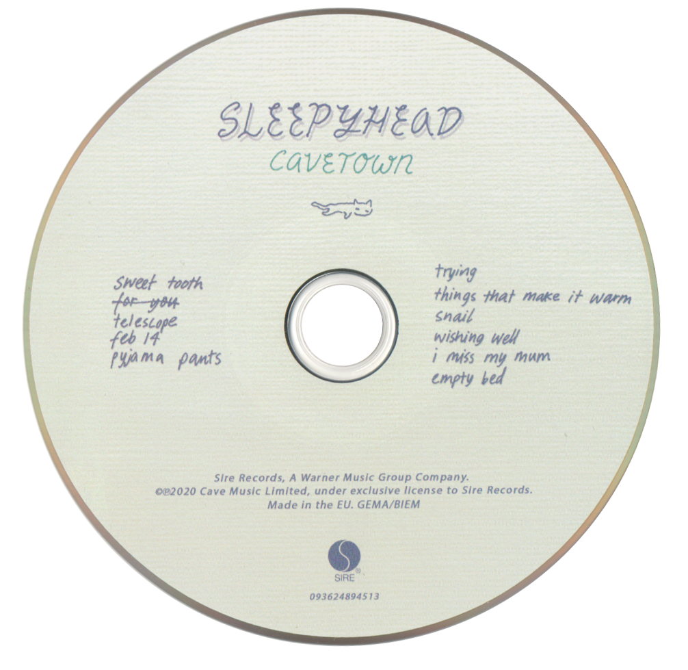
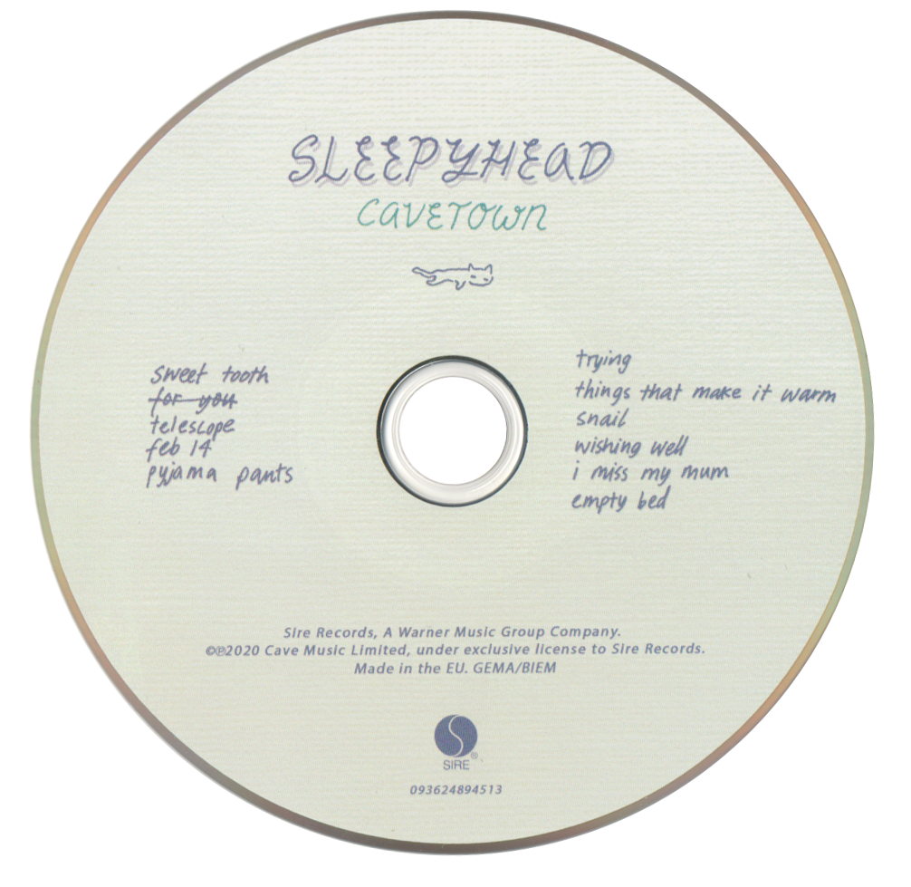
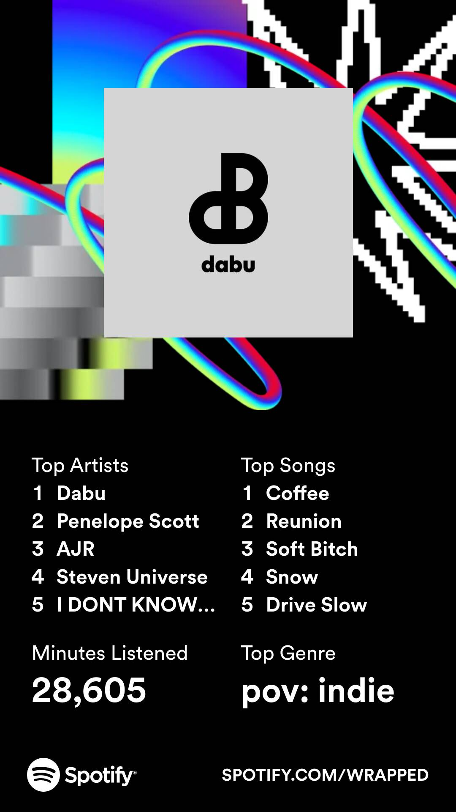
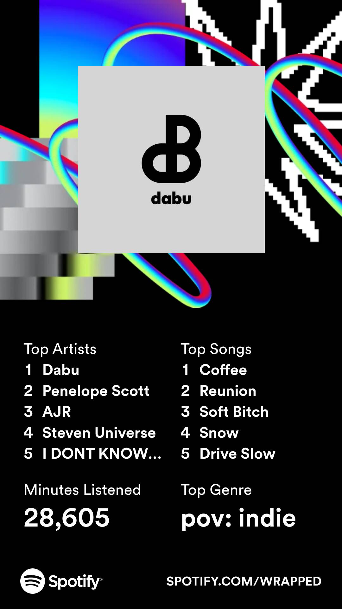
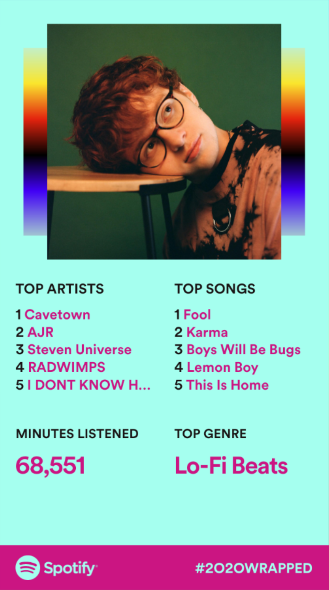
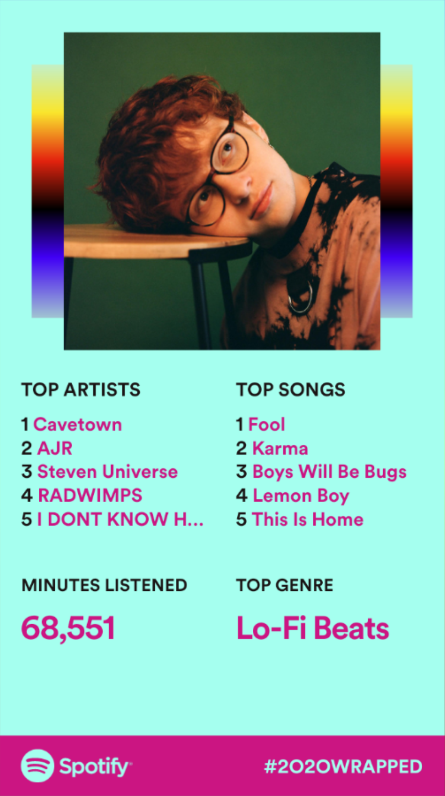

The Phantom of the Opera Soundtrack
★★★★★
Favourite Songs:
- Track Down this murderer
- The Point of No Return
- All I Ask of You
Notes:
AGHH I LOVE THIS SHOW, genuinely peak music and peak performances!! I'm also a sucker for a billion motifs to this was made for me lolll


 

 



 


 
